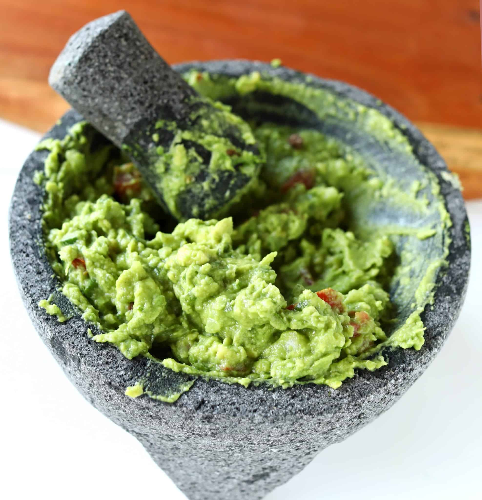

Home
Guacamole

Description
This is a never fail hand smashed guacamole. Salt, fat, acid, heat.
If making this recipe ahead of time, make sure you press cellophane down onto the top of the guacamole to reduce oxidation.
Ingredients
- 2 large Avocados
- 1 Lime
- Fresh Cilantro
- 1 Roma Tomato
- Garlic Salt
- Red Onion
- Finely Chopped Jalapeno(to taste)
Steps
- Dice Tomato and add it to Peeled Avocao in a large bowl
- Add rough chopped Cilanto (about 4 Tbsp)
- Add 1/4 cup finely diced Red Onion
- Add Garlic Salt and Jalapeno to taste
- Smash ingredients until desired consistency